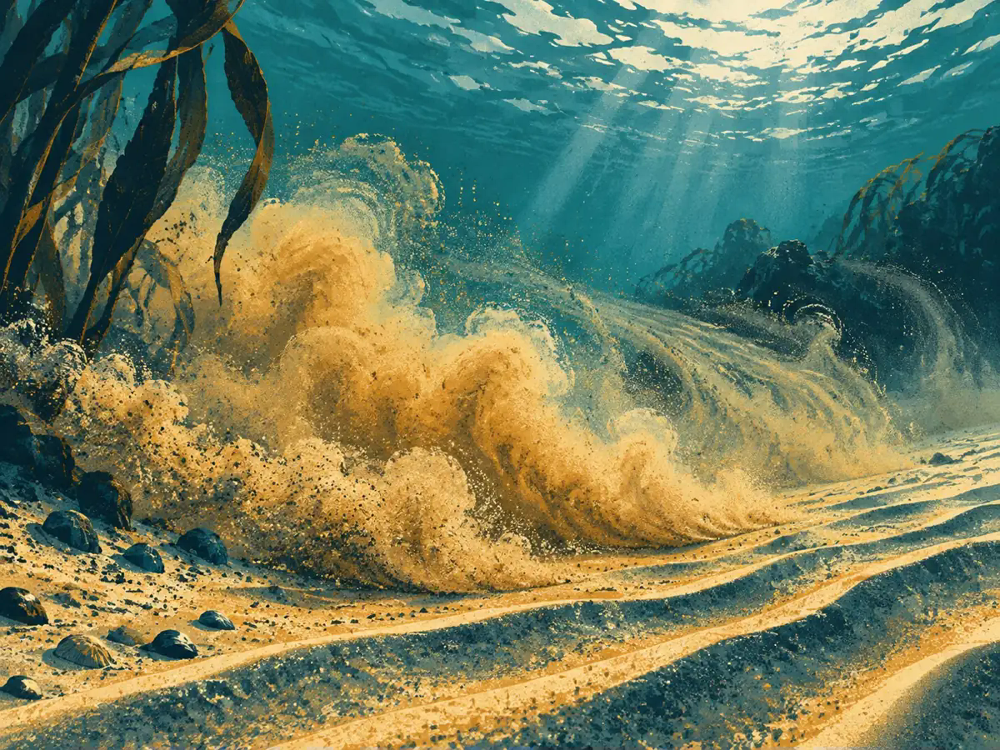
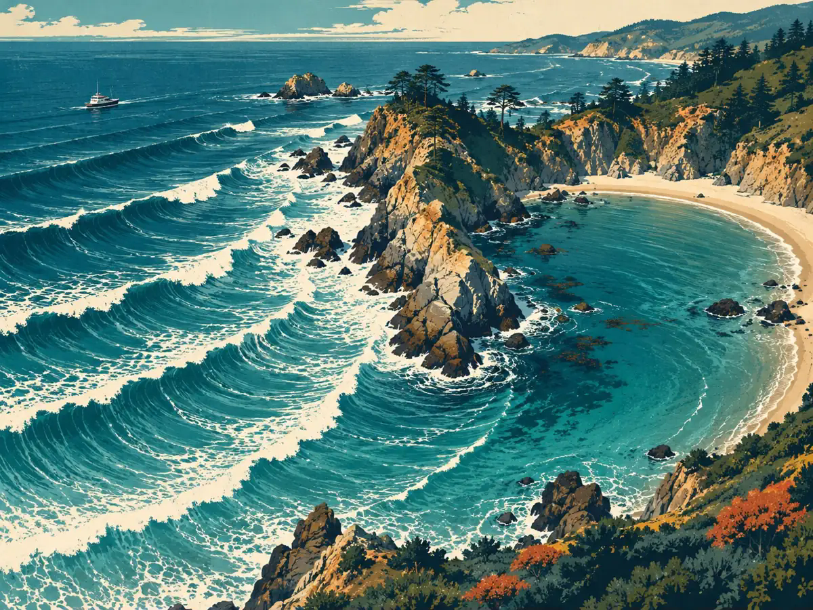
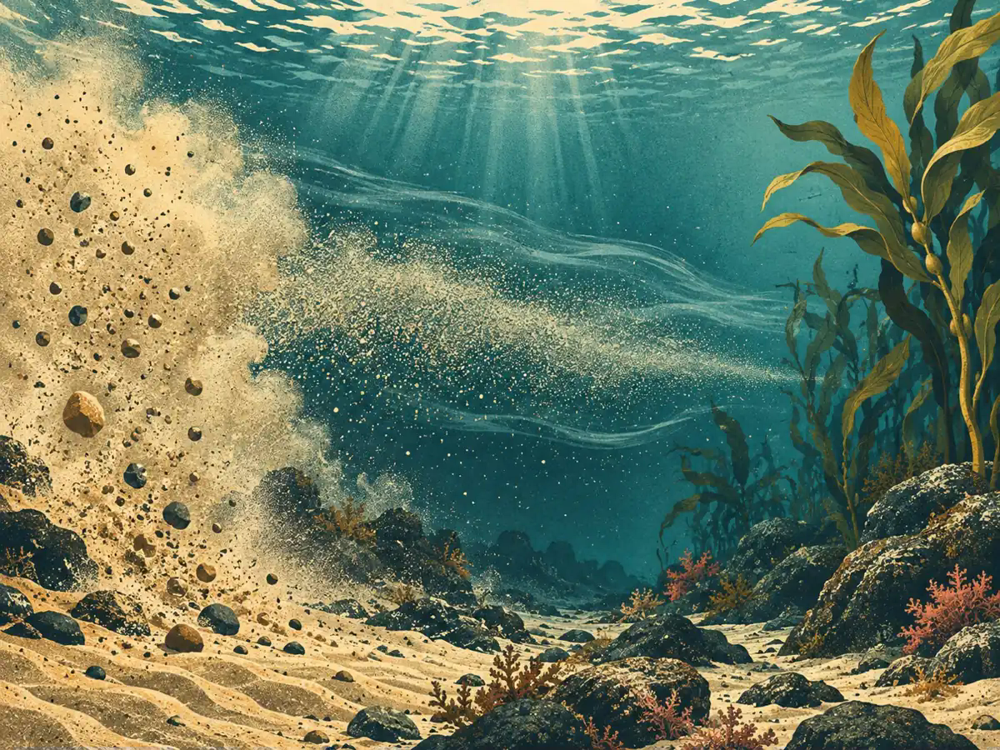
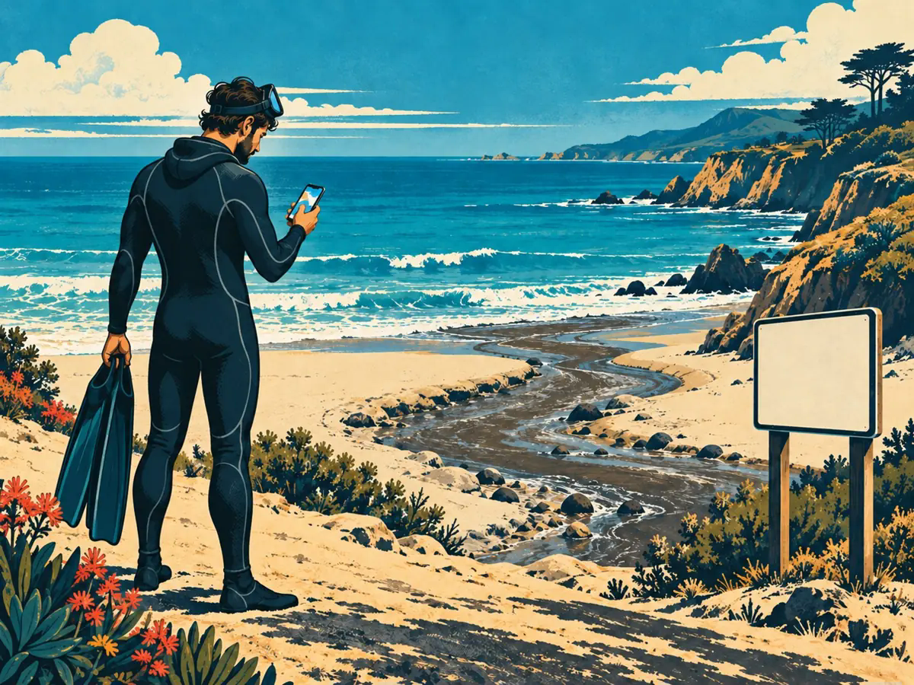

Viz School / Freediving + spearfishing
The swell dropped. Why is visibility still bad?
Viz School for freedivers and spearfishers: why smaller waves do not guarantee clearer water, and why clarity is not a water-quality test.

You are checking the coast before a freedive or spearfishing trip. The waves look smaller, the wind has eased, and the surface seems inviting. Then you look underwater and see a cloud of particles. What happened?
The surface and the water below do not reset together. A swell can stir sediment off the seabed. When that sediment is still suspended, a calmer surface does not mean the view has cleared.
The bottom gets stirred

Think of a shaken snow globe. Waves and currents move water near the bottom. If that movement is strong enough, loose sand and silt can be lifted into the water. Those particles scatter light and reduce clarity.
This is more than a beachside hunch. In a Southern California field study, USGS researchers observed sediment resuspension with both water-clarity measurements and underwater video. Grain size, wave motion and currents helped explain when sediment moved.
Wave height is only one clue

Two swells with the same height do not necessarily have the same effect at a dive site. Period, direction, local water depth and the seabed matter too. Period is the time between wave crests. USGS field research found near-bottom stress sensitive to wave period and depth.
That is why a single swell-height number cannot tell you how much sediment is moving, or how much surge you will feel. Read height, period and direction together, and keep the site's exposure in mind.
There is no reliable reset countdown

Water clears as particles settle or move away, but waves and currents may keep stirring them up. Different seabeds and conditions produce different recoveries. One USGS study observed settling within several hours as storms eased. Another documented turbid storm periods and better diver visibility during a calm spell. Neither result is a clock you can apply to La Jolla.
A fixed promise like "it clears in 24 hours" is too simple. Recent observations from the same location are more useful than a recovery timer borrowed from another coast.
Visibility and water quality are different checks

Clear-looking water can still be contaminated. Rain runoff can carry bacteria and other pollutants into the ocean. San Diego County advises avoiding ocean and bay contact for 72 hours after rainfall ends. Current advisories and closures can require staying out beyond that period.
Before entering, check recent local observations, surf and water-quality information. A camera view shows one place and time, not your whole dive route. A model is an estimate, not an entry decision. If the conditions or available information do not support your plan, postpone it.
The takeaway: the swell dropping is one piece of the story. It is not proof that the water has cleared, and clarity is not proof that it is safe to enter.
Sources
- USGS: Southern California sediment resuspension: Waves, currents, grain size and observed suspended sediment.
- USGS: Old Tampa Bay field study: Period/depth sensitivity and settling within hours in this specific setting.
- USGS: OASIS field observations: Storm-related turbidity and calmer periods with better diver visibility.
- NOAA CoastWatch: water clarity: Particles scatter light; clarity also depends on absorption.
- California Sea Grant: after-rain guidance: Runoff contamination and why clear-looking water is not a health test.
- San Diego County: beach water-quality guidance: Avoid ocean/bay contact for 72 hours after rainfall ends; follow advisories/closures.
Sources checked November 11, 2026. These studies explain mechanisms, not a forecast for a particular La Jolla dive. No universal recovery time is claimed. Illustrations are AI-generated concepts, not real sites or current conditions.